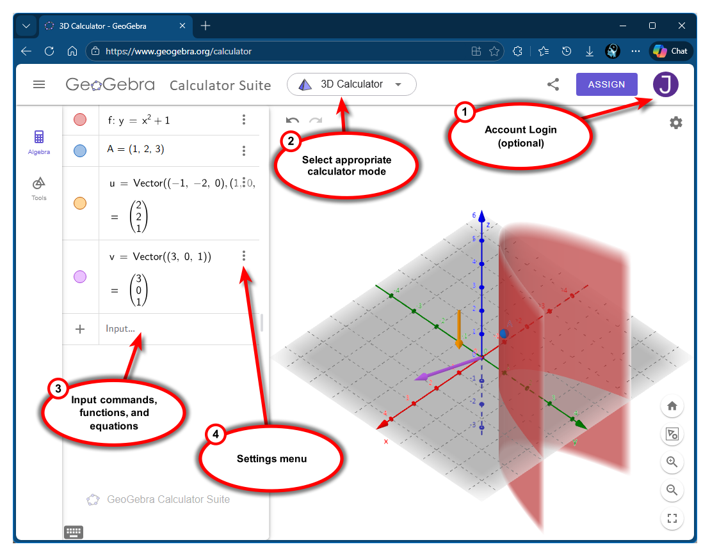

3D Space, Vectors & Dot Product
Vectors and the Geometry of Space
Vectors and the Geometry of Space
You have already used GeoGebra at this point if you interacted with the 3D graphs on previous pages. But you should probably learn how to use the graphing software for your own needs. GeoGebra is a free web-based graphing and calculator technology, and there are free app versions available on iTunes or the Google Play Store. It is not required for this course, but it can be a very helpful resource. You are welcome to use other graphing software (such as Desmos) if you want, however GeoGebra will be used within the lessons throughout the semester. You will not be allowed to use GeoGebra or any apps on tests.
Open a browser and nagivate to GeoGebra (new window) [https://www.geogebra.org/]. You can create a free user account if you think you will want to save any graphs or work you do, but this is not required. On the GeoGebra home page, click the Start Calculator button to begin.
Let's start by exploring the different areas of the GeoGebra graph, which is illustrated below. On the right side of the screen is the 3D Calculator Graph view. If you need to change the mode of the calculator, say to switch between a 2D or 3D graph, use the drop-down menu at the top of the page. On the left side of screen is the Input space. Here you can type any commands or functions to be added to the graph, or to be used as a calculator. You can edit the settings to change formatting or appearance for any input or the overall graph by clicking on the 3 dots next to each input. There is also a GeoGebra menu at the top-left of the screen where you will find options to save your current work (if you created an optional account or download to your computer).
There are many commands and functions that you can enter in GeoGebra, as illustrated above. You can graph functions and surfaces such as y = x^2 + 1 or even implicit equations like x^2 + y^2 = 1. You can plot points by simply typing in the coordinates, such as (1, 2, 3). There is a vector command with two variations, vector(point1, point2) draws a vector from point1 to point2 while vector(point) draws a vector from the origin to the specified point. Notice that each command expression has been given a unique identifying name, or letter. The parabola is named f, the 3D point is named A, and the vectors are u and v. You can specify these names or let GeoGebra given them automatically. You can also change them later. GeoGebra uses these unique names for further computions. For example, if we entered "u+v" into the graph activity illustrated above, it would compute the sum of the two vectors that correspond to the u and v names. Also, notice that the colors can be changed from the settings menu. From within the settings menu, changes can also be made to the activity or graph, such as changing angle messures between radians and degrees or changing how many decimals to use for rounding purposes. In this example, a grid was added to the xy-plane.
Be aware that while GeoGebra is a wonderful graphing and computational tool, it does have a bit of a learning curve. It may look very similar to other resoures such as Desmos (new window) [https://www.desmos.com/], but it can do so much more. If you want to use GeoGebra (and I suggest you do), then you will want to invest plenty of time to explore what it can do. Play around with it - try to graph different functions, change settings to see what happens, try doing things with the different views, explore the various commands and tools. It is not perfect, but hey, its free!
©2025 M4thG33x (new window) Some Rights Reserved.